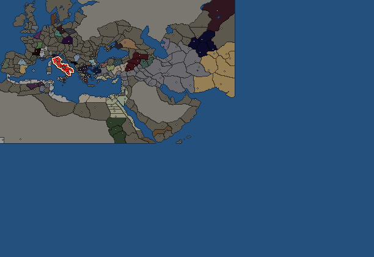

RTR: Imperium Surrectum
RTR: Imperium SurrectumRome


- difficulty Easy
- Roman culture
- believes
 Italic
Italic - 9 settlements
- capital Rome
- 14,000 manpower
- 1 character
- 21 faction units
- 439 regional units
Starting settlements
Rome begins with 9 settlements and 14,000 manpower.
| Settlement | Region | Size | Manpower | Already built | Settlement | Region | Size | Manpower | Already built | Settlement | Region | Size | Manpower | Already built |
|---|---|---|---|---|---|---|---|---|---|---|---|---|---|---|
| Rome (capital) | Latium | city | 6,000 | 1 building | Arretium | Etruria | town | 1,000 | 1 building | Sena Gallica | Umbria | town | 1,000 | 1 building |
| Capua | Campania | town | 1,000 | 1 building | Maleventum | Samnium | town | 1,000 | 1 building | Paestum | Lucania | town | 1,000 | 1 building |
| Arpi | Apulia | town | 1,000 | 1 building | Tarentum | Messapia | town | 1,000 | 1 building | Consentia | Bruttium | town | 1,000 | 1 building |
What is already built in each settlement
Rome, in Latium: Governor's Palace
Arretium, in Etruria: Governor's House
Sena Gallica, in Umbria: Governor's House
Capua, in Campania: Governor's House
Maleventum, in Samnium: Governor's House
Paestum, in Lucania: Governor's House
Arpi, in Apulia: Governor's House
Starting diplomacy
Rome begins the campaign with no allies, no trade agreements and no wars.
Like every faction, it is also at war with the  Free Peoples, who hold every settlement no faction does.
Free Peoples, who hold every settlement no faction does.
Units you can recruit
The same as in the main campaign.
Starting characters
| Name | Role | Age | |||||||||
|---|---|---|---|---|---|---|---|---|---|---|---|
| Gaius Genucius Clepsina | General | 49 |
Reforms
- A New Man: Gaius Marius (switched off)
- Polybian Reform
- The Gracchan Reforms
- The War of the Allies
- The Late Republican Reforms
- Named Legions are now available
For every faction: Military innovations have arrived!, Second wave of military innovations have arrived!.